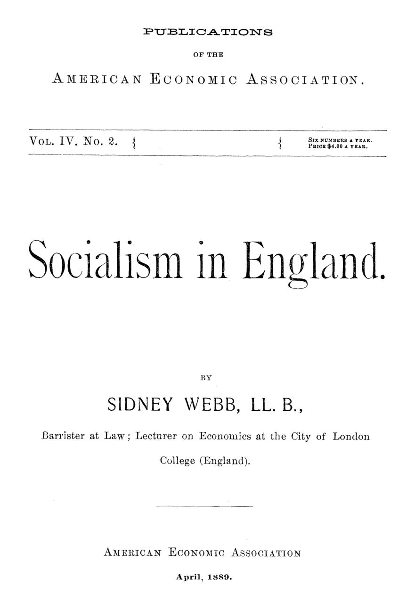

Socialismo sem saber: o inventário de Sidney Webb sobre a Inglaterra
Leitura: 8 min
Em 1889, um jovem fabiano explicou aos americanos que a Inglaterra já era socialista sem saber. A prova estava no gás, na água e nos bondes das prefeituras.


Na Câmara dos Comuns, Sir William Vernon Harcourt declarou: “Somos todos socialistas agora” (“We are all Socialists now”). O príncipe de Gales, conta Sidney Webb, fez confissão parecida pouco depois. Webb não se impressiona: chama essas frases de declarações vagas. Mas as usa como porta de entrada para uma tese mais ambiciosa — a de que o avanço do socialismo era, naquele momento, a marca mais visível do pensamento inglês.
O ensaio saiu em abril de 1889. O autor, advogado e professor de economia no City of London College, não era neutro: aparece no próprio texto entre os conferencistas da Sociedade Fabiana. É uma peça de defesa, escrita por um socialista para leitores americanos — mas documentada, com leis, datas e estatísticas oficiais.
Como uma doutrina avança sem que ninguém perceba?
O argumento central é o do avanço inconsciente. O político comum, diz Webb, negaria que o socialismo existisse como força na Inglaterra. Ainda assim, milhares teriam se tornado socialistas sem saber, muitos deles proclamando fidelidade ao laissez-faire. O que conta, insiste, não é o rótulo, mas o conteúdo.
Antes, Webb desmonta a caricatura. Platão, More, Fourier e Owen desenharam utopias estáticas, em equilíbrio perfeito. Depois de Comte, Darwin e Spencer, o ideal social tornou-se dinâmico: a nova ordem nasceria aos poucos da antiga. Os críticos, porém, seguiam atacando os falanstérios, comunidades de Fourier.
Sua definição é econômica: administração coletiva da renda da terra e dos juros, deixando ao indivíduo apenas o salário. E aponta quatro direções em curso: restrições à propriedade privada da terra e do capital; substituição de empreendimentos privados por administração pública; absorção, via tributos, das rendas não ganhas; e filantropia pública complementando a caridade privada.
De onde saiu o movimento organizado?
Webb data o movimento consciente em pouco mais de oito anos. Após o colapso do cartismo, em 1848, a energia popular foi por trinta anos para sindicatos, cooperativas e a luta pelo voto. O gatilho veio de fora: a enorme circulação de Progress and Poverty, de Henry George, cuja popularização da lei da renda de Ricardo deu o tom do novo partido — por menos que George o pretendesse.
A primeira organização explicitamente socialista foi a Democratic Federation, fundada em março de 1881 por H. M. Hyndman, Herbert Burrows e Helen Taylor, enteada de John Stuart Mill. No primeiro programa, a única proposta socialista explícita era a nacionalização da terra, posta em nono lugar. Em setembro de 1883, virou Social Democratic Federation. Seu programa imediato, que o próprio Webb acha tosco, pedia moradias com aluguel ao custo, escola gratuita com uma refeição diária, jornada de oito horas, imposto progressivo, estatização das ferrovias e bancos nacionais.
John Burns, engenheiro operário, foi absolvido de sedição em 1886, preso em 1888 após um protesto em Trafalgar Square e eleito em janeiro de 1889 para o London County Council. Annie Besant liderou a votação para o conselho escolar de Londres em novembro de 1888. William Morris fundou a Socialist League, de grupos comunais livres, já em declínio. A Sociedade Fabiana, de classe média, permanecia pequena por escolha, apostando em evolução gradual e boa análise econômica.
Por que igrejas, universidades e economistas entram na conta?
Porque, para Webb, o termômetro estava fora dos partidos. A Guild of St. Matthew, anglicana, tinha várias centenas de membros clérigos e leigos, e seu fundador, Stewart Headlam, foi eleito para o conselho escolar londrino como socialista. Na conferência pan-anglicana, os bispos dedicaram ao tema um comitê especial, num tom que Webb descreve como aprovação tímida e inconsistente.
Nas universidades, o autor é mais cauteloso. Cita a influência de T. H. Green e Arnold Toynbee em Oxford, mas admite que sete em cada dez jovens de Oxford e Cambridge eram indiferentes à questão e que a universidade, no conjunto, pendia para o conservadorismo.
Entre os economistas, a mudança seria mais nítida. Jevons já recusava direitos abstratos em matéria social. Em dezembro de 1887, oito dos 14 cursos de economia oferecidos por entidades públicas em Londres eram dados por socialistas declarados. Com ironia seca, Webb agradece a individualistas como Auberon Herbert, estacas fixas à beira da geleira que permitem medir seu movimento.
Mill e Cairnes apostaram na cooperação; Webb responde que uma geração de experiências mostrou sua insuficiência. E, mesmo universal, ela não eliminaria o tributo do trabalho à propriedade: as cooperativas continuariam pagando juros sobre terra e capital. Ataca a concorrência, não a renda.
Quanto do Estado inglês já era “socialista” em 1889?
Aqui o ensaio vira inventário. Começa pela Lei dos Pobres de 1601 e pela primeira Factory Act, de 1802, aprovada contra a resistência dos economistas. Seguem-se cerca de 400 leis locais de melhoria e, em 1875, o Public Health Act.
Glasgow é o caso extremo: além de gás, água, mercados, parques, bibliotecas e bondes, a prefeitura demoliu cortiços e construiu moradias para os pobres. Somadas as funções, o governo seria o maior empregador direto do país. Webb faz uma distinção ainda atual: regular e tributar no plano nacional; operar no municipal. Lei fabril no centro, gasômetro e bonde na cidade.
O trecho mais citado é a sátira do “homem prático”. O vereador individualista caminha pela calçada municipal, iluminada pelo gás municipal, telegrafa aos filhos para que tomem o bonde municipal e prepara, na biblioteca municipal, um discurso a favor de estatizar canais. Quando alguém lhe fala em socialismo, responde:
“Autoajuda, senhor, autoajuda individual: foi isso que fez nossa cidade ser o que é.” (“Self-help, sir, individual self-help, that's what's made our city what it is.”)
O adversário concordava com o diagnóstico. Herbert Spencer, defensor do laissez-faire, previa que as mudanças socializantes acabariam fundidas num socialismo de Estado:
“engolidas pela vasta onda que pouco a pouco elas mesmas levantaram” (“swallowed in the vast wave which they have little by little raised”)
Webb fecha com a política, citando o programa radical publicado pelo jornal The Star em agosto de 1888, e conclui que a Inglaterra ficaria mais coletivista à medida que crescessem a indústria, a riqueza e a democracia.
Na minha leitura
Na minha leitura, a força e a fraqueza do ensaio estão na mesma operação: a definição. Ao chamar de socialista toda lei fabril, todo gasômetro municipal e toda escola pública, Webb amplia o conceito até quase torná-lo irrefutável. Os mesmos fatos admitem leitura menos doutrinária: cidades em expansão lidando com saneamento e com serviços de rede — gás, água, bondes — que tendem ao monopólio natural. O próprio texto o sugere: o protagonista não é o militante, mas o homem prático, que resolve problema por problema.
O que o documento registra com clareza é que a provisão pública cresceu por acumulação, caso a caso, e majoritariamente no nível local. As perguntas que deixa são permanentes: quais serviços devem ser prestados diretamente pelo poder público e quais apenas regulados; em que esfera de governo; e financiados por quem. A divisão proposta por Webb — regular e tributar no centro, operar na cidade — segue útil para discutir federalismo fiscal, qualquer que seja a conclusão.
Glossário
- Lei da renda de Ricardo
- Teoria segundo a qual a renda da terra é o excedente das terras melhores sobre a pior terra em uso, apropriado pelo proprietário.
- Rendas não ganhas
- Expressão de Webb para renda da terra e juros, recebidos em razão da propriedade e não do trabalho.
- Coletivismo
- Princípio de controle público sobre os principais instrumentos de produção, por oposição ao individualismo.
- Cooperação produtiva
- Empresas cujos próprios trabalhadores são donos e gestores, vista por Mill e Cairnes como saída para o assalariado.
- Rates
- Tributos locais ingleses sobre imóveis, que financiavam os serviços municipais.
Fontes
- Socialism in England (pp. 7–73). JSTOR · Internet Archive (PDF)
- Sumário da edição no JSTOR: Publications of the American Economic Association, vol. 4, nº 2.
Documento em domínio público (EUA, publicado antes de 1931), via JSTOR Early Journal Content e Internet Archive. Resumo e comentário do autor deste site, sem afiliação com a American Economic Association. Encontrou um erro? Escreva: a correção é publicada no próprio texto, com data.
← Nº 17 · Quem fixa o salário? Duas tentativas de achar a lei, em 1888 Nº 19 · Lama, enxada e pedágio: o custo da estrada ruim nos EUA de 1889 →